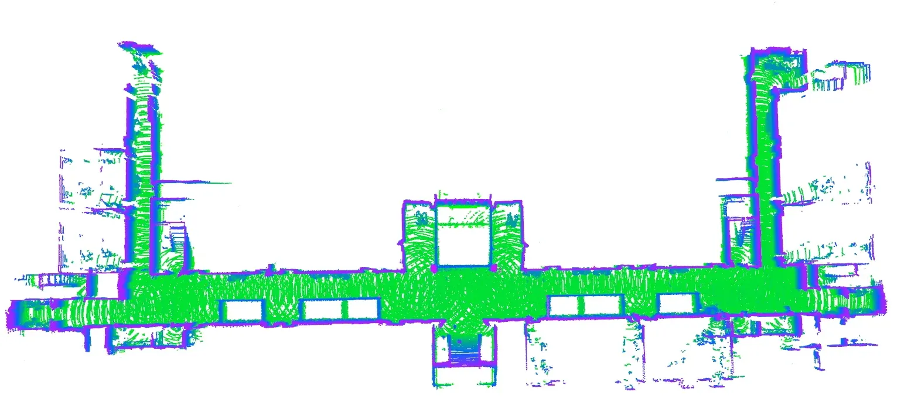

激光导航LiDAR navigation
三维激光雷达与惯性融合导航3D LiDAR and inertial navigation
融合三维点云和 IMU 完成建图定位，展示目标点导航、绕障与狭窄空间通行。Fuses 3D point clouds and IMU data for mapping and localization, with goal navigation and obstacle avoidance demos.
目标Goal
移动机器人需要在三维环境中建立地图、估计自身位置，并安全驶向指定目标点。该项目结合激光雷达与惯性信息处理几何结构和连续运动。The mobile robot must map 3D surroundings, estimate its pose, and move safely toward a specified goal. The project combines LiDAR geometry with inertial motion information.
系统实现System design
PPT 标注 LIO-SAM，展示点云地图、目标点与导航路径。传感器组合以三维激光雷达和 IMU 为核心，导航层根据地图与障碍信息规划移动。The slides identify LIO-SAM and show a point-cloud map, goal points, and navigation paths. The sensor setup centers on 3D LiDAR and IMU, with navigation planned around mapped obstacles.
可见效果Visible result
原始视频展示移动底盘在室内绕障和接近狭窄目标点。尽管 PPT 某些标题提到室外，所选影片画面主要是室内，故只按视频可见场景描述。The original footage shows the mobile base avoiding obstacles indoors and approaching a goal in a narrow area. Although some slide headings mention outdoors, the selected video primarily shows indoor scenes.
